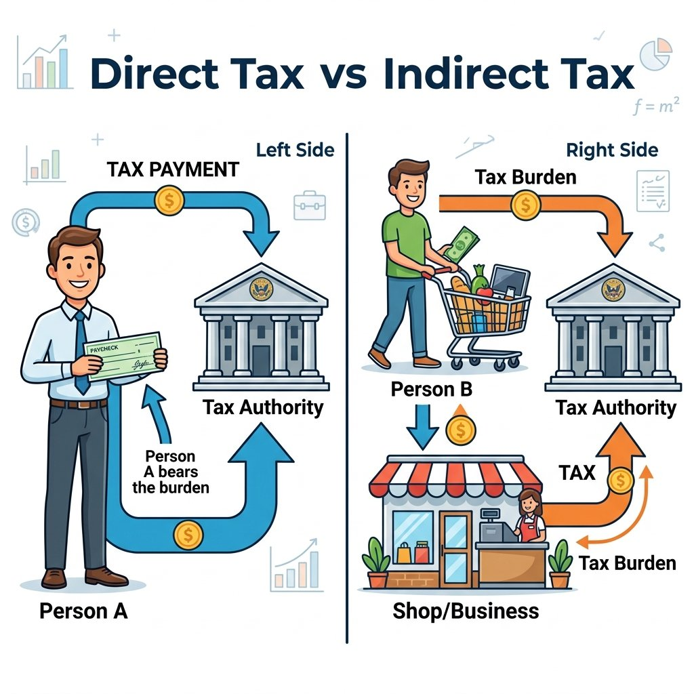

13. 財政政策と税金
私たちが納めている税金は、どのように使われ、どのような役割を果たしているのでしょうか。政府（国や地方自治体）が行う経済活動を「財政」と呼びます。財政には、私たちの暮らしの安全を守るだけでなく、景気を良くしたり貧富の格差を縮めたりする非常に重要な役割があります。今回は、税金の分類と、日本の財政が抱える大きな課題について詳しく学びます！
1. 政府の経済活動「財政（ざいせい）」の３大役割
政府は、集めた税金などをもとにして予算を組み、様々な事業を行います。財政には大きく３つの機能があります。
① 公共財・公共サービスの提供
警察、消防、道路、公園、義務教育など、市場経済（民間企業）では利益が出にくく不足してしまうサービスを、税金を使って提供します。
② 所得の再分配（しょとくのさいぶんぱい）
所得の多い人から多くの税金を集め、その税金を社会保障（生活保護や年金など）を通じて所得の低い人へ支払うことで、貧富の格差を是正します。この役割を支えるのが、所得税に採用されている累進課税制度（るいしんかぜいせいど）です。
③ 景気の微調整（財政政策・フィスカルポリシー）
政府は、予算の増減によって景気の波をなだらかにする調整を行います。
- 不景気のとき：
公共事業（道路や橋の建設など）を増やして仕事を創り出し、同時に減税を行って人々が買い物に使うお金を増やします。 - 好景気（インフレ）のとき：
公共事業を減らし、増税を行ってお金の流通量を減らし、景気や物価の過熱を抑えます。
2. 税金（租税）の分類と仕組み
税金は、納める先や仕組みによって細かく分類されます。テストで最も分類問題として狙われやすいポイントです。
① 直接税（ちょくせつぜい）と間接税（かんせつぜい）
- 直接税：税金を納める義務がある人（納税者）と、実際に税金を負担する人（担税者）が同じ税金。
・（例）所得税（個人の収入にかかる）、法人税（企業の利益にかかる）、相続税など。 - 間接税：税金を納める義務がある人（お店など）と、実際に税金を負担する人（消費者）が異なる税金。
・（例）消費税（買い物の際、店を通じて納める）、酒税、たばこ税、関税など。
② 消費税の持つ「逆進性（ぎゃくしんせい）」
消費税は、所得に関わらず全員に一律の税率（10%など）が適用されます。そのため、所得の低い人ほど、自分の全収入のうち消費税として支払う割合が高くなり、「低所得者ほど負担感が大きくなってしまう」という問題点があります。これを逆進性と呼び、軽減税率（食料品などを8%にする）などで緩和する対策が取られています。

図1：直接税（所得税など）と、負担者と納税者が異なる間接税（消費税など）の仕組み
3. 日本の財政赤字と「公債（こうさい）」の山
現在の日本の国家予算（一般会計）は、税金収入（税収）だけではまかなえておらず、約3〜4割を国の借金である公債（国債・こくさい）の発行に頼っています。
公債を発行することで一時的にお金は集まりますが、これは将来世代（いまの中学生やそれ以下の世代）が税金として返さなければならない借金です。高齢化によって社会保障費が増え続ける中、この累積する国の借金をどう減らし、財政を健全化していくかが、現在の日本で最も深刻な議論となっています。
🔥 この単元のテスト対策・暗記のコツ
-
★
所得の再分配と累進課税制度の記述：
・記述：「累進課税制度とは何か、説明しなさい。」
・解答：「所得が多い人ほど高い税率を課す制度で、所得の格差を縮小する（所得の再分配の）役割を持つ。」 -
★
消費税の「逆進性」についての記述（最頻出！）：
・記述：「消費税が持つ『逆進性』とは、どのような問題か、簡潔に説明しなさい。」
・解答：「一律の税率が適用されるため、所得の低い人ほど収入に対する消費税の負担割合が大きくなってしまう問題。」 -
★
不景気時の財政政策（オペレーションと混同注意）：
・不景気のとき ➔ 公共事業を増やす、減税をする。
※日銀の金融政策（買いオペ）と混ざりやすいので、「政府が行うこと＝財政政策」「日銀が行うこと＝金融政策」としっかり区別しましょう。